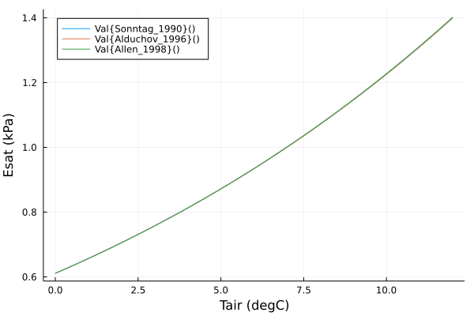
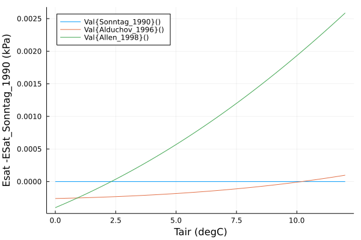

This vignette is a short introduction to the functionalities of the bigleaf.jl package. It is directed to first-time package users who are familiar with the basic concepts of Julia. After presenting the use of several key functions of the package, some useful hints and guidelines are given at the end of the vignette.
Package scope and important conceptual considerations
bigleaf.jl calculates physical and physiological ecosystem properties from eddy covariance data. Examples for such properties are aerodynamic and surface conductance, surface conditions(e.g. temperature, VPD), wind profile, roughness parameters, vegetation-atmosphere decoupling, potential evapotranspiration, (intrinsic) water-use efficiency, stomatal sensitivity to VPD, or intercellular CO2 concentration. All calculations in the bigleaf.jl package assume that the ecosystem behaves like a "big-leaf", i.e. a single, homogenous plane which acts as the only source and sink of the measured fluxes. This assumption comes with the advantages that calculations are simplified considerably and that (in most cases) little ancillary information on the EC sites is required. It is important to keep in mind that these simplifications go hand in hand with critical limitations. All derived variables are bulk ecosystem characteristics and have to be interpreted as such. It is for example not possible to infer within-canopy variations of a certain property.
Please also keep in mind that the bigleaf.jl package does NOT provide formulations for bottom-up modelling. The principle applied here is to use an inversion approach in which ecosystem properties are inferred top-down from the measured fluxes. Such an inversion can, in principle, be also be conducted with more complex models (e.g. sun/shade or canopy/soil models), but keep in mind that these approaches also require that the additional, site-specific parameters are adequately well known.
The use of more detailed models is not within the scope of the bigleaf.jl package, but it is preferable to use such approaches when important assumptions of the "big-leaf" approach are not met. This is the case in particular when the ecosystem is sparsely covered with vegetation (low LAI, e.g. sparse crops, some savanna systems).
Installation and Loading
The bigleaf.jl R package can be installed with the usual command once:
using Pkg
Pkg.add(bigleaf)And then importet to the every Julia session by:
using bigleafPreparing the data
In this tutorial, we will work with a dataset from the eddy covariance site Tharandt (DE-Tha), a spruce forest in Eastern Germany. The DataFrame DE_Tha_Jun_2014 is downloaded from the bigleaf R package repository and contains half-hourly data of meteorological and flux measurements made in June 2014:
# downloading and caching code not shown
tha = DE_Tha_Jun_2014
mdtable(select(describe(tha), :variable, :eltype, :min, :max), latex=false) # hideAnd the first six rows of tha:
mdtable(tha[1:6,:],latex=false) # hideWe give the data.frame a shorter name here. More information on the data (e.g. meaning of column names and units) can be found at the bigleaf R package. For more information on the site see e.g. Grünwald & Bernhofer 2007. In addition, we will need some ancillary data for this site throughout this tutorial. To ensure consistency, we define them here at the beginning:
LAI = 7.6 # leaf area index
zh = 26.5 # average vegetation height (m)
zr = 42 # sensor height (m)
Dl = 0.01 # leaf characteristic dimension (m)General guidelines on package usage
There are a few general guidelines that are important to consider when using the bigleaf.jl package.
Units
It is imperative that variables are provided in the right units, as the plausibility of the input units is not checked in most cases. The required units of the input arguments can be found in the respective help file of the function. The good news is that units do not change across functions. For example, pressure is always required in kPa, and temperature always in °c.
TODO
Meteorological variables
The bigleaf.jl package provides calculation routines for a number of meteorological variables, which are basic to the calculation of many other variables. A few examples on their usage are given below:
# Saturation vapor pressure (kPa) and slope of the saturation vapor pressure curve (kPa K-1)
Esat_slope(25.0)(3.1600569164883336, 0.18830553015839052)# psychrometric constant (kPa K-1)
psychrometric_constant(25.0,100.0) # Tair, pressure0.06616110355198965# air density (kg m-3)
air_density(25.0,100.0) # Tair, pressure1.1684082743664639# dew point (degC)
dew_point(25.0,1.0) # Tair, VPD18.764# wetbulb temperature (degC)
wetbulb_temp(25.0, 100.0, 1.0) # Tair, pressure, VPD20.648# estimate atmospheric pressure from elevation (hypsometric equation)
pressure_from_elevation(500.0, 25.0) # elev, Tair95.68128752221739There are several formulations describing the empirical function Esat(Tair). The following figure compares them at absole scale and as difference to the default method. The differences are small.


Unit interconversions
The package further provides a number of useful unit interconversions, which are straightforward to use (please make sure that the input variable is in the right unit, e_g. rH has to be between 0 and 1 and not in percent):
# VPD to vapor pressure (e, kPa)
VPD_to_e(2, 25)1.1600569164883336# vapor pressure to specific humidity (kg kg-1)
e_to_q(1, 100)0.006243600811065828# relative humidity to VPD (kPa)
rH_to_VPD(0.6, 25)1.2640227665953336# conductance from ms-1 to mol m-2 s-1
ms_to_mol(0.01, 25, 100) # mC, Tair, pressure0.40339315662384556# umol CO2 m-2 s-1 to g C m-2 d-1
umolCO2_to_gC(20)20.755008000000004Many functions provide constant empirical parameters. Those can be changed by overriding the default values with bigleaf_constants and passing this Dictionary to the respective function.